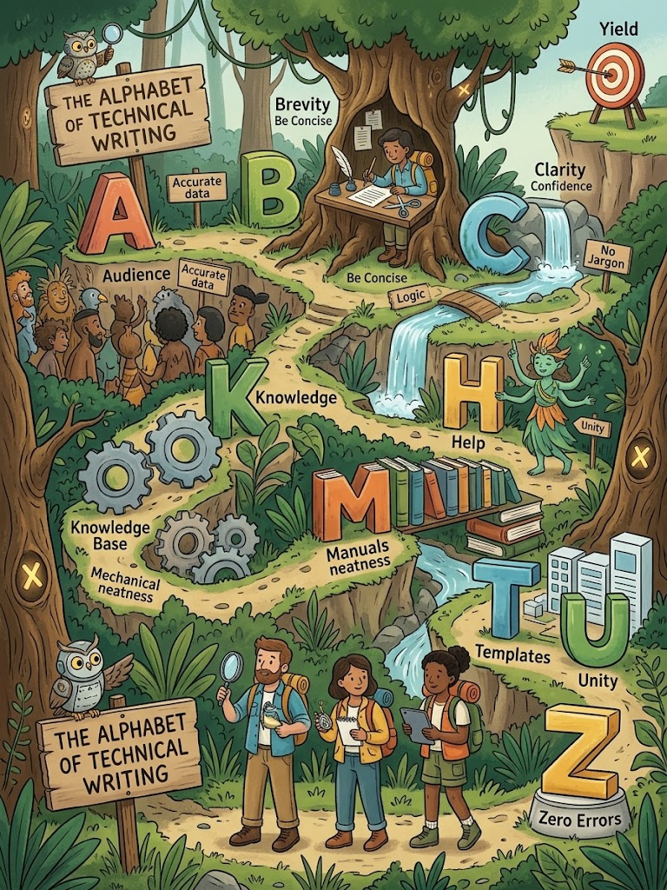

Introduction
The ABC's of Technical Writing is a set of guiding principles that every technical writer should follow. Our professor presented these principles as an alphabet — from A (Accuracy) to Z (Zest). Together, they form a complete framework for producing clear, credible, and useful technical documents.
These principles are not just style preferences — they are standards of professional communication. Mastering them helps writers avoid ambiguity, build reader trust, and deliver information that serves a real purpose.

The Complete ABC's of Technical Writing
The following list comes directly from our professor's lecture materials. Each principle is explained below with a practical example.
A — Accuracy
Definition: Tactfulness in recording data. Every fact, figure, and statement must be correct and verifiable.
Example
❌ "The machine weighs about 50 kg."
✅ "The machine weighs 48.5 kg (manufacturer specification, Model X200)."
B — Brevity
Definition: Direct to the point; conciseness. Use the fewest words necessary without losing meaning.
Example
❌ "Due to the fact that the system was down, we were unable to process the order."
✅ "Because the system was down, we could not process the order."
C — Confidence
Definition: Being decisive in communicating. Avoid hedging words like "maybe," "perhaps," or "I think."
D — Dignity
Definition: Courtesy to readers as professionals. Maintain a respectful, formal tone.
E — Emphasis
Definition: Knowing what is important to the reader. Highlight key information using formatting, headings, or placement.
F — Facility
Definition: Devices used by the writer to make the report easy to understand — such as tables, diagrams, and smooth transitions.
G — Grammatical Correctness
Definition: Following the rules of grammar, punctuation, and spelling.
H — Honesty
Definition: Citing sources and avoiding plagiarism.
I — Illustration
Definition: Using charts, graphs, and diagrams to clarify complex concepts.
J — Judgement
Definition: Qualifying data and information gathered. Distinguish between facts, opinions, and estimates.
K — Knowledge
Definition: Collection of data and information. Writers must research thoroughly before writing.
L — Logic
Definition: The process of qualification. Ideas must flow in a clear, rational order.
M — Mechanical Neatness
Definition: General appearance of the report — clean formatting, consistent fonts, proper spacing.
N — Normal Procedure
Definition: Conformity to general standards — following accepted report formats and conventions.
O — Objectivity
Definition: The writer considers himself as another person — presenting facts without personal bias.
P — Planning
Definition: Gives purpose and direction to the writing process. Outline before drafting.
Q — Qualification
Definition: Evaluate ideas to be included. Not every piece of information belongs in the report.
R — Revision
Definition: Check statements, spelling, punctuation, and clarity.
S — Straight Sentences
Definition: Vary sentence structure and use transitional devices.
T — Thoroughness
Definition: The substance of the report — it must be complete and cover all necessary aspects.
U — Unity
Definition: Coherence of ideas. Every paragraph should support one central idea.
V — Viewpoint
Definition: Perspective in writing — the angle from which the information is presented.
W — Word Choice
Definition: Avoid words that are difficult to understand. Use plain, precise language.
Example
❌ "Utilize" → ✅ "Use" | ❌ "Commence" → ✅ "Start"
X — Xtra Effort
Definition: Going beyond the minimum — proofreading, fact-checking, and polishing the work.
Y — You-Point
Definition: Focusing on the reader ("you") rather than the writer ("I").
Z — Zest
Definition: Write things that are invigorating — engaging, clear, and purposeful, even in technical content.
Grouping the ABC's
| Category | Principles |
|---|---|
| Content Quality | Accuracy, Brevity, Confidence, Honesty, Judgement, Knowledge, Thoroughness |
| Structure & Organization | Logic, Normal Procedure, Planning, Qualification, Unity |
| Style & Tone | Dignity, Emphasis, Objectivity, Straight Sentences, Viewpoint, Word Choice, You-Point, Zest |
| Presentation | Facility, Illustration, Mechanical Neatness |
| Process | Grammatical Correctness, Revision, Xtra Effort |
Self-Check
1. What does "Brevity" mean?
Being direct to the point; using the fewest words necessary without losing meaning.
2. Which principle deals with citing sources?
Honesty.
3. What is the "You-Point" principle?
Focusing on the reader ("you") rather than the writer ("I").
References
- Mitante, E. J. L. (2026). ABCs of Technical Writing [Lecture notes]. City College of Calapan.
- Mitante, E. J. L. (n.d.). Technical Writing Overview, Purposes and ABCs [Lecture slides]. City College of Calapan.
- Purdue Online Writing Lab. (n.d.). Conciseness. Purdue University.